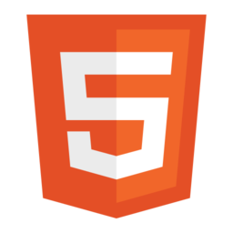

About.
木村 瞭介
Ryosuke Kimura
"心地よく 心を動かす"
サイトを訪れた人がストレスなく自分の欲しい情報を手にすることができ、情報、デザイン、コンセプトなどに心を動かされる。そんなサイトのデザイン設計していくことを心がけ、サイト制作に携わっていきたいと考えています。
Profile
生まれと育ち
1990年6月14日、福島県生まれ。その後小学校4年生までは東京で育ち、父の仕事の関係で5年生から中学3年生の間は広島、高校生時代は名古屋と各地を点々と移り住み、現在は埼玉県戸田市に在住。これらの経験が様々な人生を送る人々に興味関心を持ち、自分の知らない世界に足を踏み入れる勇気を持つきっかけとなる。
大学時代
大学時代には海外の人々の考え方や、広い世界に触れてみたいという思いから海外留学を行い、夢を持つことの大切さや自分の人生を自分でコントロールしていく重要性を感じた。またゼミで知り合った多摩美術大学の学生と絵本の自主制作を行ったことをきっかけに、絵を描くこと、人に伝えること、広めるための手段を考えることなどを通してデザインやITの道を目指すようになる。
プログラマ時代
大学卒業後はデザインの仕事をしたいと考えたが、金銭的な問題と今後はITの知識が必要不可欠であるという思いから、webアプリ開発企業のプログラマとして就職。Javaの基礎を学んだ後に携帯販売管理アプリの保守開発エンジニアとしてPL/SQLやVBAなどを使って、システムのメンテナンス、新規開発、バグ修正等を行ってきた。働き始めて2年程度経った頃を機に、大学卒業時に挑戦したいと考えていたデザインを学ぶことにする。
デザイン専門学校時代
デザイン学校ではモノづくりが昔から好きだったこともあり、プロダクトデザインを学び、在学時には様々なコンペティションに参加。結果は振るわなかったが、恐れずに自分の実力を試し、挑戦するという姿勢はこの時に培われた。卒業制作では伊達政宗をモチーフにしたジュエリーデザインを行い、作品そのものだけでなく、コンセプトやブランディングなどの考え方などから評価をいただき奨励賞を受賞。
商品企画開発職時代
デザイン学校卒業後は、デザイン経験を活かして通販小売メーカーの自社商品企画開発職として再就職。インフルエンサーとの交渉、OEM交渉、ブランディング、デザイン、マーケティング、商品写真撮影、商品画像レタッチなど幅広い業務をこなしてきた。その中で、自社ECサイトに触れる機会が多く、web制作に興味を抱くようになる。
現在
2年目の秋にプログラマ経験があることから、情報システム管理部署への異動となったが、ECサイトの新規ページ作成・修正・変更などの際に外部のデザイン会社やシステム会社に全て任せなければならず、これまでの経験を活かして、自分自身がお客様視点でより良いwebサイトを作りたいと考えるようになり、独学でHTMLやCSSを学び始めた。その後退職し、職業訓練校でweb制作の流れを学ぶとともに本格的にwebサイト制作を開始。ユーザーにとって見やすく使いやすいサイトを追求していく制作作業が自分の性格に合っていることに改めて気がつき、現在はwebコーダー/webデザイナーを目指している。
Skills
- 